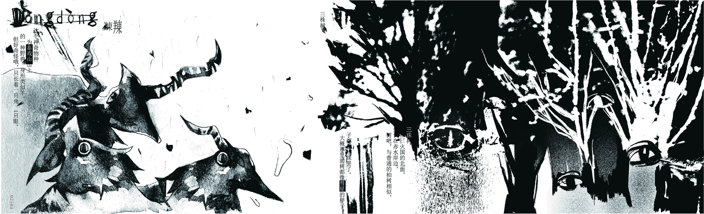
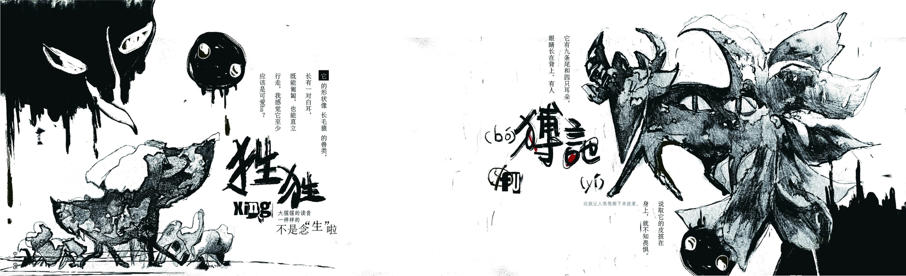
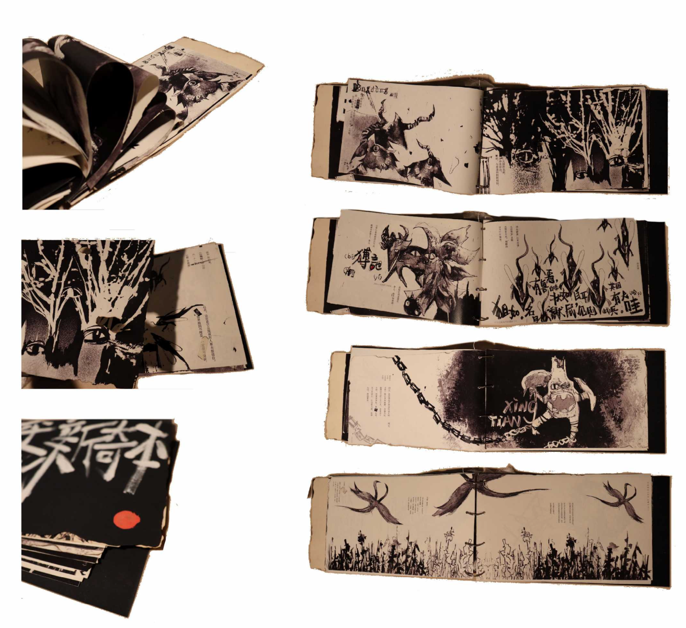

SHAN HAI JING
This book design is a new visual interpretation of the ancient Chinese classic, The Classic of Mountains and Seas.
It combines traditional hand-drawing, digital tablet techniques, and mixed media approaches.
With expressive brushwork and imaginative composition, bring mythical beasts and strange tribes to life.
The work reimagines the fantastical landscapes and creatures of this legendary text.

Dongdong (䍶䍶) : a one-eyed, one-horned sheep that constantly cries out in a bizarre voice.

Xingxing (狌狌): a monkey-like creature with a human face, white ears, and the ability to walk upright and speak like a person.
Boyi (猼訑): a beast with nine tails, four ears, and eyes on its back—its skin is said to make one fearless when worn.
Juru (狙如): a mouse-like creature with white ears and teeth, believed to summon armies when it appears.

Yong (颙): a bird-shaped creature with a human face, four eyes, and ears — its cry is said to foretell great floods.

A solemn ritual where humans bow and offer sacrifices to a god-like beast with a human face and a sheep's body.

Erba Shen (二八神): mysterious forest spirits who always appear in pairs at night, their presence felt more than seen.

Zhuyu (祝余): a fragrant, leek-like herb with blue blossoms, known for quelling hunger and often found on the mythical Que Mountain.
